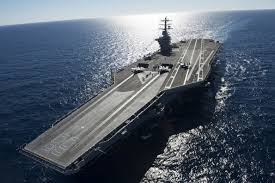
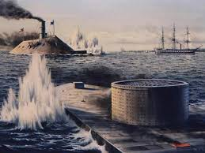

How do ironclads relate to our modern day battleships?
back
The battleships we have now were probably inspired by Civil War ironclads, such as the CSS Virginia and the USS Monitor. Below: Examples of modern day warships.
- Aircraft carriers
- Destroyer
- Amphibious assault ship

The most important ironclad from my point of view was the USS Monitor. It had the first rotating turret! Imagine what the world would be like if ironclads were never made. We might still be making wooden ships!
Background Information

An ironclad is a ship covered in a metal. Civil War ironclads were mostly steam powered. Because of the heavy metal armor, most ironclads were very slow. Below is a list a pros and cons of ironclads.
- Pros: Very protective armor. High firepower. Intimidation. Ram.
- Cons: Slow. Requires metal. Cramped quarters.
Below is a list of some of the difference between the USS Monitor and a warship.
- Firepower: The USS Monitor only had 2 cannons. The USS Missouri had 100+ more guns, cannons, and missiles.
- Speed: The USS Monitor was more on the faster side of ironclads, but the US Iowa-class battleships had a top speed of 35.2 knots.
- Stealth: The USS Monitor was so close to the water level, is looked like debris. Some battle ships can go undetected in radar.